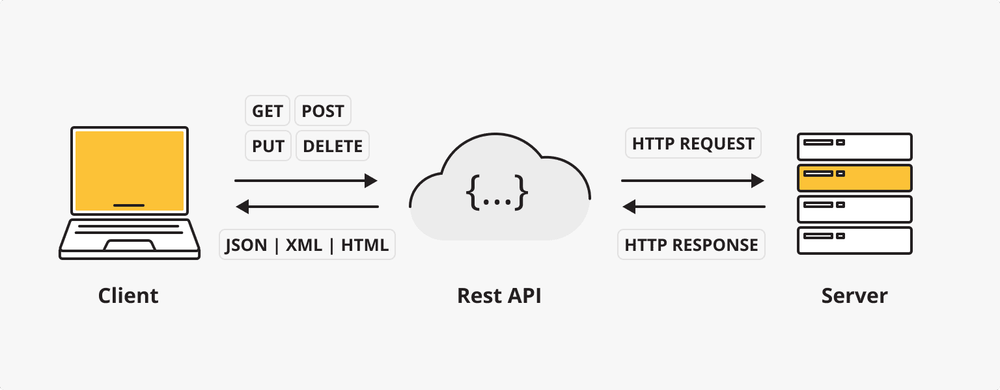

REST (Representational State Transfer) is a software architectural style used to design interfaces for network applications.
REST API (Application Programming Interface) is a Web service interface built on REST principles, allowing different systems to communicate and exchange data via the HTTP protocol.

The core features of REST API include:
- Statelessness (Stateless): Each request contains all the information needed to process that request
- Resource-oriented (Resource-based): All data is treated as resources, identified by URIs
- Uniform Interface: Uses standard HTTP methods (GET, POST, PUT, DELETE, etc.)
- Cacheability (Cacheable): Responses can be explicitly marked as cacheable or non-cacheable
Core Concepts of REST API
1. Resource
In REST, a resource is any information that can be named, such as a user, product, order, etc. Each resource has a unique identifier (URI).
2. HTTP Methods
REST APIs use standard HTTP methods to define operations on resources:
| HTTP Method | Description | Idempotency | Safety |
|---|---|---|---|
| GET | Retrieve a resource | Yes | Yes |
| POST | Create a new resource | no | no |
| PUT | Update an entire resource | Yes | no |
| PATCH | Partially update a resource | no | no |
| DELETE | Delete a resource | Yes | no |
3. Status Codes
HTTP status codes indicate the result of processing a request:
| Status Code | Category | Common Status Codes |
|---|---|---|
| 2xx | Success | 200 OK, 201 Created |
| 3xx | Redirection | 301 Moved Permanently |
| 4xx | Client Errors | 400 Bad Request, 404 Not Found |
| 5xx | Server Errors | 500 Internal Server Error |
4. Data Formats
Common data exchange formats for REST APIs:
- JSON（JavaScript Object Notation）
- XML（eXtensible Markup Language）
- Sometimes formats such as YAML, CSV, etc., are also used.
REST API Design Best Practices
1. URI Design Principles
- Use nouns instead of verbs to represent resources
- Good:
/users - Bad:
/getUsers
- Good:
- Use lowercase letters and hyphens (-)
- Avoid file extensions
- Use plural forms for collections
- Represent relationships hierarchically:
/users/{id}/orders
2. Versioning
It is recommended to include API version information in the URI or request headers:
- URI path:
/v1/users - Request header:
Accept: application/vnd.myapi.v1+json
3. Filtering, Sorting, and Pagination
For collection resources, provide query parameters:
- Filtering:
/users?role=admin - Sorting:
/users?sort=-created_at - Pagination:
/users?page=2&limit=10
4. Security
- Use HTTPS
- Implement authentication (OAuth2, JWT)
- Limit request frequency
- Validate input data
REST API Example
User Management API Example
Example
GET /api/v1/users
Accept: application/json
# Create a new user
POST /api/v1/users
Content-Type: application/json
{
"name": "Zhang San",
"email": "zhangsan@example.com"
}
# Get a specific user
GET /api/v1/users/123
Accept: application/json
# Update user information
PUT /api/v1/users/123
Content-Type: application/json
{
"name": "Zhang San (Updated)",
"email": "new-email@example.com"
}
# Delete a user
DELETE /api/v1/users/123
Response Example
Example
{
"status": "success",
"data": {
"id": 123,
"name": "Zhang San",
"email": "zhangsan@example.com",
"created_at": "2023-01-01T00:00:00Z"
}
}
// Error response
{
"status": "error",
"message": "User not found",
"code": 404
}
Tools for Testing REST APIs
- Postman: A powerful API testing tool
- cURL: Command-line tool
- Insomnia: Lightweight API testing client
- Swagger/OpenAPI: API documentation and testing tool
cURL Example
Example
curl -X GET https://api.example.com/users/123 \
-H "Accept: application/json"
# POST request
curl -X POST https://api.example.com/users \
-H "Content-Type: application/json" \
-d '{"name":"Li Si","email":"lisi@example.com"}'
REST API Development Frameworks
Depending on the programming language, there are various frameworks available for developing REST APIs:
| Language | Popular Frameworks |
|---|---|
| JavaScript | Express.js, NestJS |
| Python | Django REST Framework, Flask |
| Java | Spring Boot |
| PHP | Laravel, Symfony |
| Ruby | Ruby on Rails |
| Go | Gin, Echo |
I. Basic Design Principles
1. Adopt Clear Naming Conventions
Basic Principles：
- Use nouns (rather than verbs) to represent resources
- Use plural forms for collections
- Keep naming consistent and intuitive
Examples：
✅ Good design: /users, /products, /orders
-
❌ Bad design: /getUsers, /addProduct, /all-orders
Additional Recommendations：
- Use hierarchical naming for resources to reflect relationships between resources:
/companies/{companyId}/departments/{departmentId}/employees - To improve readability, use hyphens (kebab-case) in resource names consisting of multiple words:
/shipping-addressesinstead of/shippingaddresses - Maintain naming consistency during API version iterations, and avoid unnecessary changes that cause client confusion.
2. Use HTTP Methods Correctly
Basic Usage：
- GET: Read a resource (idempotent)
- POST: Create a new resource
- PUT: Update an entire resource (idempotent)
- PATCH: Partially update a resource
- DELETE: Delete a resource (idempotent)
Examples：
GET /users # 获取用户列表 GET /users/123 # 获取特定用户 POST /users # 创建新用户 PUT /users/123 # 完全更新用户 PATCH /users/123 # 部分更新用户 DELETE /users/123 # 删除用户
Additional Recommendations：
- Understand the importance of idempotency: GET, PUT, and DELETE are idempotent operations; multiple calls produce the same result.
- For batch operations, consider using POST instead of PUT, because PUT usually expects the client to clearly specify a resource identifier.
- When designing PATCH operations, consider using standard formats like JSON Patch (RFC 6902) or JSON Merge Patch (RFC 7386).
- For complex operations, you can use resource extensions:
POST /users/123/activateComparePOST /activateUser/123More in line with REST principles
3. Use Appropriate HTTP Status Codes
Common status codes：
- 200 OK: Request succeeded
- 201 Created: Resource created successfully
- 204 No Content: Success but no content returned (e.g., DELETE operation)
- 400 Bad Request: Client error
- 401 Unauthorized: Not authenticated
- 403 Forbidden: No permission
- 404 Not Found: Resource does not exist
- 409 Conflict: Resource conflict
- 500 Internal Server Error: Server error
Extension recommendations：
- Use more detailed status codes to improve API expressiveness:
- 429 Too Many Requests: Request rate exceeded
- 405 Method Not Allowed: Unsupported HTTP method
- 415 Unsupported Media Type: Unsupported content type
- 422 Unprocessable Entity: Semantic error
- To simplify client handling, stay consistent within major error categories: client errors (4xx) and server errors (5xx)
- Always provide meaningful error messages and error codes along with status codes
II. Query and Filtering Design
4. Implement Effective Pagination
Basic implementation：
- Use
limitandoffsetorpageandsizeparameters - Include pagination metadata in the response
Example：
GET /products?limit=20&offset=40 GET /products?page=3&size=20
Response example:
{
"data": [...],
"pagination": {
"total": 523,
"pages": 27,
"current_page": 3,
"per_page": 20,
"next": "/products?page=4&size=20",
"prev": "/products?page=2&size=20"
}
}
Extension recommendations：
- Consider using cursor-based pagination, especially when dealing with large datasets or frequently updated data
- Set reasonable default pagination values and maximum limits to prevent oversized requests from affecting performance
- Provide HATEOAS links in pagination responses for client navigation (e.g., next/prev links in the example above)
- For time-series data, time-based pagination can be used:
GET /events?since=2023-01-01T00:00:00Z&until=2023-01-31T23:59:59Z
5. Provide Flexible Filtering, Sorting, and Search
Basic implementation：
- Use query parameters for filtering:
?status=active - Use
sortparameter for sorting:?sort=created_at - Support multi-field sorting and ascending/descending order:
?sort=price:asc,rating:desc
Example：
GET /products?category=electronics&price_min=100&price_max=500&sort=price:asc GET /users?role=admin&search=john
Extension recommendations：
- Provide expression syntax for complex queries:
?price=gt:100,lt:500 - Implement partial matching and fuzzy search options:
?name=like:john - Support field selection, allowing clients to specify the fields they need:
?fields=id,name,email - Consider implementing GraphQL endpoints as a supplement for particularly complex queries
- Provide predefined filters for common filter combinations:
?filter=recentMay be equivalent to?created_after=30days&sort=created_at:desc
6. Implement Effective API Versioning
Main methods：
- URL path version:
/api/v1/users - Query parameter version:
/api/users?version=1 - Request header version:
Accept: application/vnd.company.v1+json
Extension recommendations：
- URL path versioning is most intuitive but leads to unstable URIs
- Request header versioning keeps URIs stable but is less intuitive for clients
- Follow semantic versioning principles during version iterations:
- Backward-compatible changes use minor version numbers (v1.1)
- Incompatible changes use major version numbers (v2)
- Provide a migration period between old and new versions to allow clients to transition smoothly
- Clearly indicate the lifecycle status of each API version in documentation: development, stable, deprecated, decommissioned
III. Response Design
7. Design a Consistent Response Structure
Basic structure：
- Use envelope objects to distinguish data from metadata
- Keep error response format consistent
Success response example：
{
"status": "success",
"data": {
"id": 123,
"name": "Example Product",
"price": 99.99
},
"meta": {
"timestamp": "2023-06-15T08:30:00Z"
}
}
Error response example:
{
"status": "error",
"error": {
"code": "VALIDATION_ERROR",
"message": "Invalid input data",
"details": [
{"field": "email", "message": "Must be a valid email address"}
]
},
"meta": {
"timestamp": "2023-06-15T08:30:00Z",
"request_id": "req-123456"
}
}
Extension recommendations：
- Include unique error codes in error responses for troubleshooting and documentation reference
- For complex errors, provide structured error details, especially for form validation errors
- Include a request identifier (request_id) for log tracking and customer support
- Consider internationalization support, providing multilingual versions of error messages or error code mappings
- Avoid leaking sensitive information or implementation details in error messages
8. Implement HATEOAS Principles
Basic concept：
- HATEOAS（Hypermedia as the Engine of Application State）
- Include related resource links in responses to make the API self-descriptive
Example：
{
"data": {
"id": 123,
"name": "John Doe"
},
"links": {
"self": "/users/123",
"orders": "/users/123/orders",
"update": {"href": "/users/123", "method": "PUT"},
"delete": {"href": "/users/123", "method": "DELETE"}
}
}
Extension recommendations：
- Use standardized link relation names (as defined in HAL or JSON:API specifications)
- Include context information for links, such as HTTP method and required media type
- Dynamically generate links based on user permissions, showing only actions available to the current user
- Consider using JSON Schema to provide self-description of input data formats
9. Choose Appropriate Serialization Formats
Common formats：
- JSON: Most commonly used, lightweight and easy to parse
- XML: More strict but more verbose
- MessagePack: Binary format, suitable for performance-sensitive scenarios
Extension recommendations：
- Use content negotiation to support multiple formats: the client uses the
Acceptheader to specify the desired format - For JSON, follow a consistent naming convention (camelCase or snake_case)
- Consider special scenario requirements:
- CSV format is suitable for exporting large amounts of data
- Protocol Buffers or gRPC are suitable for high-performance microservice communication
- JSON-LD is suitable for scenarios requiring semantic data
- Provide consistent data models and field names across different formats
IV. Security and Performance
10. Implement Effective Authentication and Authorization
Common methods：
- API keys: Suitable for service-to-service communication
- OAuth 2.0: Suitable for third-party authorization
- JWT (JSON Web Tokens): Suitable for stateless authentication
Extension recommendations：
- Choose appropriate authorization flows for different API usage scenarios:
- User to server: Authorization code flow
- Server to server: Client credentials flow
- Implement fine-grained permission control, following the principle of least privilege
- Implement API key rotation and revocation mechanisms
- Use standard OAuth 2.0 scopes to define permissions
- Consider implementing attribute-based access control (ABAC) for complex authorization scenarios
11. Implement Rate Limiting and Throttling
Basic implementation：
- Use request rate limiting to protect the API
- Provide limit information in response headers
Response header example：
X-RateLimit-Limit: 100 X-RateLimit-Remaining: 95 X-RateLimit-Reset: 1623760800
Extension recommendations：
- Implement multi-level limits:
- Limit by IP address (prevent anonymous abuse)
- Limit by user/API key (fair usage)
- Limit by resource/endpoint (protect sensitive operations)
- Provide premium plans or on-demand scaling options
- Use token bucket or leaky bucket algorithms to handle burst traffic
- Implement adaptive throttling to dynamically adjust limits based on system load
- Provide priority channels or reserved capacity for critical clients
12. Use Caching Appropriately
Basic implementation：
- Use ETags and If-None-Match headers
- Set appropriate Cache-Control directives
Example：
Cache-Control: max-age=3600, must-revalidate ETag: "33a64df551425fcc55e4d42a148795d9f25f89d4"
Extension recommendations：
- Set different caching strategies based on resource type:
- Static content: longer max-age
- Personal data: shorter max-age or private directive
- Frequently changing data: use ETag instead of max-age
- Implement conditional requests (If-Modified-Since, If-None-Match) to reduce bandwidth usage
- Consider implementing caching at the API gateway or CDN level
- Provide cache invalidation mechanisms, especially for resources that need to be updated suddenly
- Use cache tags for fine-grained cache management
13. Support Content Compression
Basic implementation：
- Support gzip and Brotli compression
- Use Accept-Encoding and Content-Encoding headers
Extension recommendations：
- Automatically apply compression to large responses, but avoid compressing small responses (<1KB)
- Optimize compression levels for different content types
- In performance-sensitive scenarios, consider pre-compressing common responses
- Monitor compression ratio and CPU usage to find the optimal balance
- Consider handling compression at the proxy/gateway layer to reduce the burden on application servers
V. Documentation and Maintainability
14. Provide Comprehensive API Documentation
Basic implementation：
- Use OpenAPI/Swagger specification
- Include sample requests and responses
Extended recommendations：
- Adopt a "docs-as-code" approach, versioning the API specification together with the code
- Provide an interactive API browser that allows developers to test the API directly
- Include tutorials for common use cases and integration scenarios
- Provide example code snippets for each endpoint (in multiple programming languages)
- Implement an API changelog that clearly marks deprecated and new features
- Consider creating a developer community or forum to promote knowledge sharing
15. Monitoring and Logging
Basic implementation：
- Record request/response times
- Track error rates and usage patterns
Extended recommendations：
- Implement distributed tracing using W3C Trace Context or similar standards
- Set up multi-dimensional monitoring metrics:
- Endpoint performance (P95/P99 latency)
- Error rates and type distribution
- Client usage patterns
- Resource consumption (CPU, memory, bandwidth)
- Implement intelligent alerting that detects anomalous patterns rather than simple thresholds
- Provide a developer console that allows API consumers to view their own usage statistics
- Use structured log formats (such as JSON) for easier log analysis and search
16. Provide Useful Error Debugging Information
Basic implementation：
- Provide clear error messages
- Include unique error codes
Extended recommendations：
- Adjust error verbosity based on environment (avoid leaking sensitive information in production)
- Implement an error center that maps error codes to detailed troubleshooting guides
- Provide context-sensitive help links
- Provide automated fix suggestions for common errors
- Provide more detailed stack traces and context in development environments
- Implement automatic reporting mechanisms for critical errors
VI. Advanced Design Considerations
17. Batch Processing and Asynchronous Operations
Batch processing：
- Support batch create, update, and delete operations
- Provide partial success handling options
Batch operation examples：
POST /users/batch
{
"operations": [
{"method": "POST", "path": "/users", "body": {"name": "User 1"}},
{"method": "PUT", "path": "/users/123", "body": {"name": "Updated User"}}
]
}
Asynchronous operations：
- Return 202 Accepted for long-running tasks
- Provide task status endpoints
Asynchronous flow examples：
POST /reports/generate
Response: 202 Accepted
Location: /tasks/abc-123
GET /tasks/abc-123
Response: {"status": "processing", "progress": 45, "eta": "30s"}
GET /tasks/abc-123
Response: {"status": "completed", "result": "/reports/xyz-789"}
Extended recommendations：
- Implement webhook-based asynchronous notifications that call back the client when a task completes
- Provide atomicity options for batch operations (all succeed or all fail)
- Support dependencies in batch operations (one operation depends on the result of another)
- Provide task priority mechanisms and cancellation capabilities
- Implement task retry strategies and failure handling mechanisms
18. Consider the Evolution of API Design
Basic principles：
- Use addition rather than modification
- Avoid deletion; deprecate first, then remove
- Maintain backward compatibility
Extended recommendations：
- Establish a clear API lifecycle policy:
- Stability expectations for Preview/Alpha/Beta versions
- Deprecation period (typically at least 6-12 months)
- Maintenance period for long-term support (LTS) versions
- Use feature flags to gradually roll out new features
- Implement API usage analytics to understand which endpoints and features are no longer used
- Provide migration tools and examples to help clients transition to new versions
- Consider extension points at design time, such as custom fields or metadata support
VII. Industry-Specific Optimizations and New Trends
Mobile App API Optimization
- Implement GraphQL endpoints to allow mobile clients to precisely request the data they need
- Support partial responses to reduce bandwidth usage:
?fields=id,name,thumbnail - Provide batch preloading APIs to reduce network round trips
- Consider responsive design that adjusts response size based on device capabilities and network conditions
- Implement incremental synchronization mechanisms that only transmit changed data
IoT (Internet of Things) API Considerations
- Support lightweight protocols (such as MQTT or CoAP)
- Implement device state models and bidirectional communication
- Optimize bandwidth usage using binary formats and compression
- Design offline operations and conflict resolution strategies
- Provide device management and firmware update APIs
API-First Development Approach
- Adopt a design-first rather than code-first approach
- Use API models to drive the development process (for example, generating code from OpenAPI specifications)
- Implement API design review processes to ensure consistency and quality
- Establish API style guides and best practice documentation
- Use contract testing to ensure implementations conform to specifications
VIII. Summary
A well-designed REST API requires carefully balancing multiple factors, including usability, performance, security, and maintainability. By following these best practices, development teams can create APIs that both adhere to REST principles and meet the needs of modern applications. The key is to maintain consistency, intuitiveness, and always think from the perspective of API consumers. As the API economy continues to evolve, high-quality API design will become a key factor in organizational success.
IX. Further Reading
- RESTful Web APIs (Leonard Richardson, Mike Amundsen)
- API Design Patterns (JJ Geewax)
- The Design of Web APIs: Best Practices for Building Modern Applications (Arnaud Lauret)
- REST API Security Guide (OWASP)
- Richardson Maturity Model: Understanding the evolution levels of REST APIs